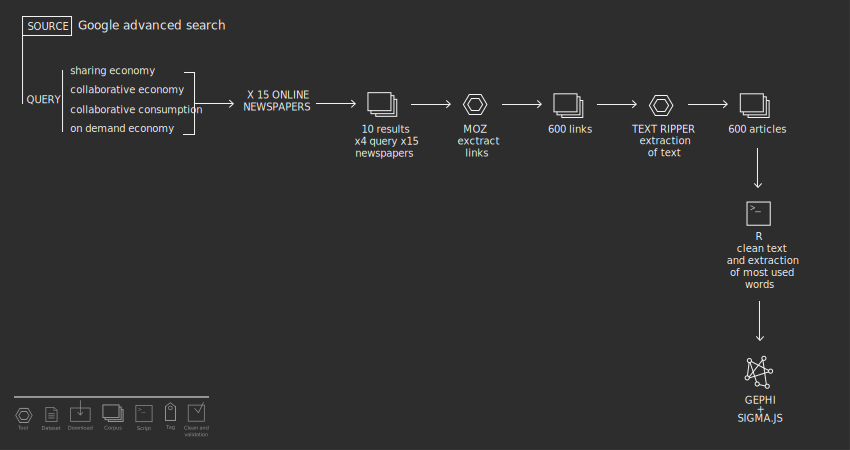

Protocol
By Google Advanced Search we retrieved the top 10 articles (in order of relevance) for each journal per query: for each journal we used all our four definition queries, downloading 40 total articles. The final amount of articles was 600.
In order to gain the text of these articles we used Moz first, to get the URLs of the articles and then, trough Text ripper (a Digital Methods initiative) we downloaded the plain texts.
The next step was the count the top 10 words occurring in each journal: we did it with an R script. Finally, Gephi was used to visualize: in the spreadsheet, top 10 words of all journals fulfill the column “target”, while newspaper fulfill the column “source”. We achieved a regular and ordered form by using Circular layout, a plugin for Gephi.
